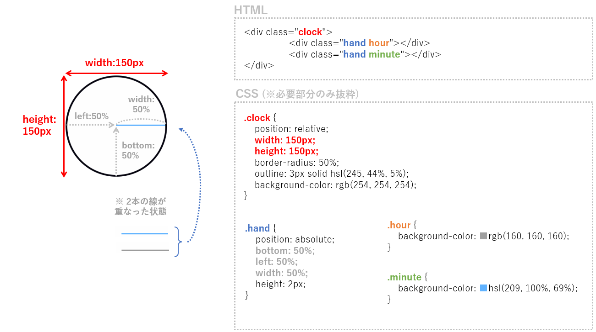
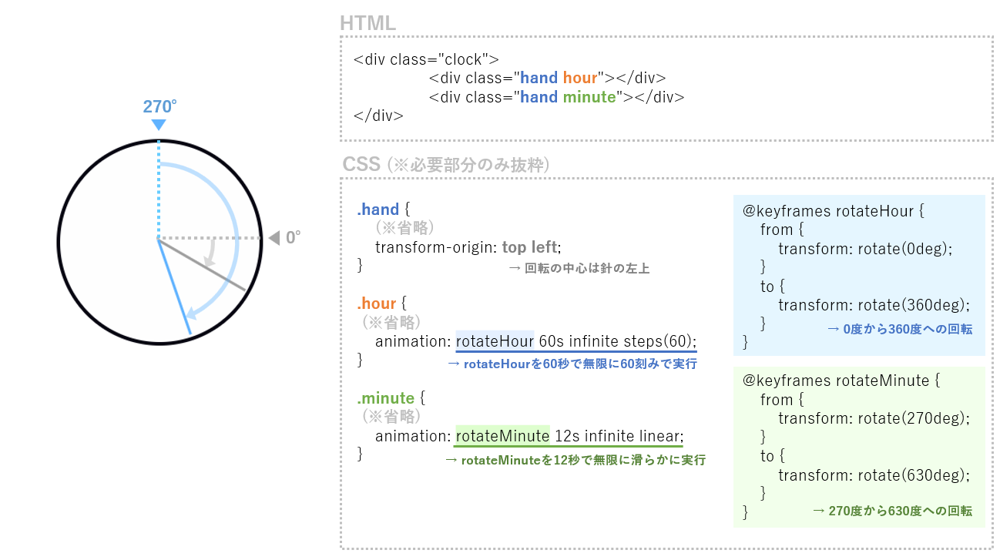

動く時計のアニメーション
コードサンプル
<div class="clock">
<div class="hand hour"></div>
<div class="hand minute"></div>
</div>
.clock {
position: relative;
width: 150px;
height: 150px;
border-radius: 50%;
outline: 3px solid hsl(245, 44%, 5%);
background-color: rgb(254, 254, 254);
}
.hand {
position: absolute;
bottom: 50%;
left: 50%;
width: 50%;
height: 2px;
transform-origin: top left;
}
.hour {
background-color: rgb(160, 160, 160);
animation: rotateHour 60s infinite steps(60);
}
.minute {
background-color: hsl(209, 100%, 69%);
animation: rotateMinute 12s infinite linear;
}
@keyframes rotateHour {
from {
transform: rotate(0deg);
}
to {
transform: rotate(360deg);
}
}
@keyframes rotateMinute {
from {
transform: rotate(270deg);
}
to {
transform: rotate(630deg);
}
}
解説
この時計は枠部分と針部分(2個)のパーツから構成されており、針のパーツを異なる間隔で回転させることで時計のように見えるアニメーションになっています。
実際のコード内容を見ていきましょう。

clockクラスが枠部分、handクラスが針部分となっており、さらにhourクラスとminuteクラスでそれぞれの針の色を設定しています。
なお、上記の状態ではhourクラスを持つ針(灰色)の上にminuteクラスの針(水色)が同じ場所に重なっているため、minuteクラスの針しか見えていない状態となっています。
上記の状態では止まったままであるため、これに回転のアニメーション設定を追加します。

上図内CSSに書かれている @keyframes (以下、キーフレーム)は、対象がどのような動きをするかを設定できるCSSの構文です。
キーフレームrotateHourには0°～360°の回転運動、rotateMinuteには270°～630°(=360°)の回転運動を設定しました。
hourクラスを持つ針(灰色)にはrotateHourを適用、minuteクラスの針(水色)にはrotateMinuteを適用し、それぞれにアニメーションの間隔、進行方法、再生回数を設定しています。
回転の中心は針の左端部分にしたいため、針の共通クラスであるhandクラスに基点を左上とする設定を追加しています。
キーフレームやアニメーションの詳細設定によってさまざまな動きをつけることが可能であるため、動かせる環境で色々試してみるのがおすすめです。